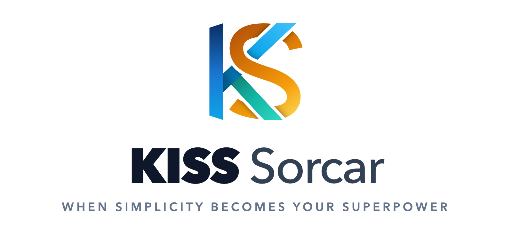
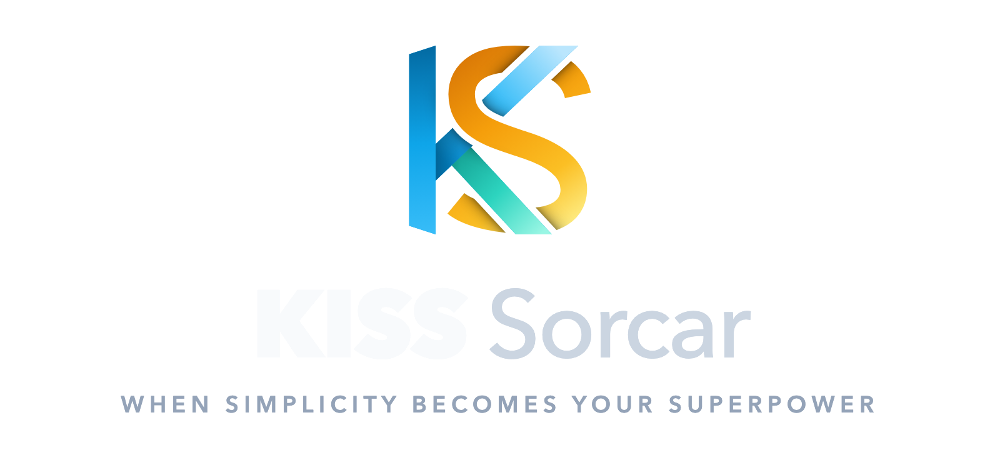
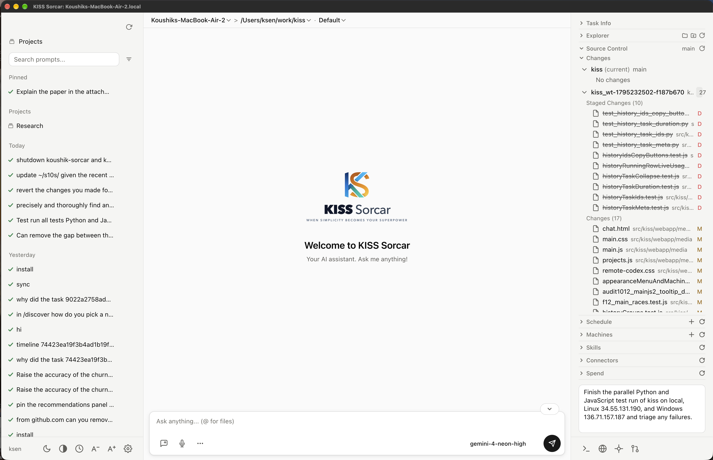

Everything should be made as simple as possible, but not simpler.
System Settings → Privacy & Security, click Open Anyway.
macOS 14 or later · Apple silicon and Intel · how to open it
Open a terminal and runbash ~/Downloads/KISS-Sorcar-Linux.run
64-bit Linux · x86-64 and ARM64 · how to install it
KISS Sorcar is a free, simple, local-first, bring-your-own-key AI agent framework. It runs as a browser/mobile web app served by a local daemon, and offers a Python client API for scripting tasks. Your prompts and code go directly to the model provider or local endpoint you configure, never through our servers. Multi-model workflows take a paragraph of prompt, not a pipeline: complex AI systems and techniques can be replaced with a paragraph of prompt in KISS Sorcar.

Preferred way to install KISS Sorcar — macOS & Linux, one command, no extra steps.
The HarnessTax study (UC Berkeley and Arena Intelligence) held the model fixed, swapped the harness between Claude Code, Codex CLI and Pi, and found that the harness moves cost far more than it moves what gets solved. We added KISS Sorcar to their Terminal-Bench 2.0 table: the same 30 sampled tasks, the same seven models, three attempts per task, graded by the official verifier, with 727 words of coding rules as the system prompt. Averaged over the seven models it solved 75.6% of attempts; Pi 70.0%, Codex CLI 65.7%, Claude Code 65.1%, with the best point estimate on every model. Full write-up: The Harness Tax, Audited; Markdown twin: docs/benchmarks.md.
| Model | KISS Sorcar | Pi | Codex CLI | Claude Code | ||||
|---|---|---|---|---|---|---|---|---|
| solved | $/att. | solved | $/att. | solved | $/att. | solved | $/att. | |
| Claude Fable 5 | 80.0 | 1.50 | 71.1 | 1.08 | 72.2 | 0.98 | 75.6 | 1.55 |
| Claude Opus 4.8 | 74.4 | 1.21 | 72.2 | 0.76 | 72.2 | 0.85 | 68.9 | 0.90 |
| Claude Sonnet 4.6 | 76.7 | 2.23 | 65.6 | 0.61 | 63.3 | 0.55 | 62.2 | 0.67 |
| Claude Haiku 4.5 | 51.1 | 0.39 | 47.8 | 0.25 | 31.1 | 0.21 | 41.1 | 0.26 |
| GPT-5.6 Sol | 85.6 | 0.69 | 83.3 | 0.42 | 78.9 | 0.76 | 71.1 | 1.35 |
| GPT-5.6 Luna | 78.9 | 0.05 | 76.7 | 0.04 | 72.2 | 0.06 | 70.0 | 0.10 |
| Kimi K3 | 82.2 | 1.14 | 73.3 | 0.38 | 70.0 | 0.45 | 66.7 | 0.52 |
| Mean of 7 models | 75.6 | 1.03 | 70.0 | 0.51 | 65.7 | 0.55 | 65.1 | 0.77 |
Table 1. Terminal-Bench 2.0, the study’s 30-task sample, three attempts per task: percentage of attempts solved and cost per attempt in USD. KISS Sorcar: 630 attempts run on 25 September 2026, no turn cap, $50 budget per attempt, providers’ default request parameters. The other three: as published, 100-turn cap, high effort, priced on a 1 September list. Bold marks the best point estimate per row.
Thirty tasks is a small sample: the pooled 95% interval over tasks, 63.8 to 85.9, contains all three published means, and the comparison with the published table also differs in date, price list, turn cap and prompt. So we reran Pi ourselves, paired, on the same model and the same tasks.
Harbor’s Pi agent (Pi 0.87.1) at the study’s high-effort setting, no turn cap, no wall-clock limit, three attempts per task, priced with the same table as ours. Pi solved 68.9% of attempts at $1.45 and 14.5 turns per attempt; KISS Sorcar solved 80.0% at $1.50 and 15.3 turns. Five cents more per attempt (interval −$0.71 to +$0.70). KISS Sorcar has the higher task mean on 7 tasks, Pi on none, 23 are ties. Without feal-linear-cryptanalysis, where all three Pi attempts died on API errors, the gap is +8.0 points (sign test p = 0.031).
The same frozen prompt solved 79.1% of attempts on the 59 unsampled tasks (79.4% over all 89), so the result is not an artifact of tuning on the sample. Pi on 57 of them (two qemu tasks were dropped because the verifier did not score the two harnesses alike) solved 71.9% at $1.00 and 12.3 turns; KISS Sorcar solved 82.5% at $1.63 and 17.3 turns. 15 tasks to 3, 39 ties (p = 0.008); here KISS Sorcar paid 63 cents more per attempt, spent on turns.
What to keep in mind: only Pi was rerun, on one model, at high effort with its own prompt and no budget cap; the pooled seven-model comparison changes effort, turn cap and date at once, and the paired runs leave effort and prompt tangled together. The benchmark exercises the loop, six tools and the coding rules; the discovery and adversarial-testing procedures, the memory, the reviewer and the IDE features were switched off. The HarnessTax study stands: the band a fourth harness draws is wider than the one three harnesses drew. Runners, the Pi subclass and per-attempt records: benchmarkings/harnesstax/ and papers/kisssorcar/evidence/tb2_trials.json; method and intervals in the paper, Section 5.
Pick the install path that fits you — the one-line installer, a git checkout, Docker, or the Python package. All you need is at least one API key (or a Claude Code / Codex subscription or Bedrock credential). The one-line install script below is the recommended way to install the full KISS Sorcar stack.
Preferred way to install the full KISS Sorcar stack. Works on macOS and Linux (x86_64, aarch64, arm64); on Windows, use the setup program below. The script clones or updates ~/.kiss/kiss_ai and runs its install.sh, which builds the Python environment, installs Playwright’s Chromium and cloudflared, puts the sorcar CLI in ~/.local/bin, registers the kiss-web daemon as your user service, and opens the web app at http://127.0.0.1:8787. If run from inside ~/.kiss or ~/.kiss/kiss_ai, it opens your home directory as the working folder instead.
Updates come from the web app’s update toast (Update or Update when idle). If an update fails, run the one-line command again — it will not delete your history.
Mac installer package: KISS-Sorcar.pkg runs the same install.sh for the logged-in user on macOS 14 or later (Apple silicon and Intel). It needs no Homebrew, no git and none of Apple’s developer tools. The package is not signed with an Apple Developer ID, so macOS blocks it when you double-click it: open System Settings → Privacy & Security, click Open Anyway next to the message about the package, and confirm with an administrator password. Or install it from Terminal, which is not blocked:
Windows setup program: KISS-Sorcar-Setup.exe runs the same install.sh for the user who opens it on 64-bit Windows 10 and Windows 11. It needs no administrator rights, no git, no Python and no bash on the PC. The program is not signed, so Windows SmartScreen shows “Windows protected your PC” for a downloaded copy: click More info, then Run anyway. KISS Sorcar gets a Start Menu shortcut and starts at every logon. To remove it, open Settings → Apps → Installed apps (Apps & features on Windows 10), find KISS Sorcar and click Uninstall; your settings, API keys and history stay in %USERPROFILE%\.kiss. From a checkout, run ./install.sh in Git Bash. To install without a window:
Linux installer: KISS-Sorcar-Linux.run runs the same install.sh for the user who runs it on 64-bit Linux (x86-64 and ARM64). It needs no root, no git, no Python and no curl: wget is enough, which is what an Ubuntu desktop ships. Tested on Ubuntu 24.04 LTS, 26.04 LTS and 26.10, Debian 13, Fedora 44 and 45, openSUSE Tumbleweed and Arch Linux. Download it, open a terminal and run:
For just the Python package (Python 3.13+) — the kiss-web daemon, the Python client API, and the messaging-agent entry points:
Docker: run KISS Sorcar in a plain Debian container serving the web app on port 8787 (password from KISS_WEB_PASSWORD or printed in docker logs; state persists in kiss-sorcar-web-home):
Open https://localhost:PORT on the host and accept the self-signed certificate once or install /ca.crt.
Provide at least one model backend via environment variables or the web app’s Settings panel (saved in ~/.kiss/config.json):
With no explicit model set, KISS Sorcar picks the first configured provider in priority order: Anthropic (claude-opus-5-5 / claude-sonnet-5-5), OpenAI (gpt-6.1-sol-medium / gpt-6-luna), Gemini (gemini-3.8-flash / gemini-3.5-flash-lite), OpenRouter, Bedrock, Claude Code CLI (cc/opus / cc/haiku), and Codex CLI (codex/default).
~/.kiss/MY_MODELS.json).bedrock/ (e.g., bedrock/global.anthropic.claude-opus-5-5, optional effort suffix -low..-max). Authenticate via AWS_BEARER_TOKEN_BEDROCK or standard AWS credentials + AWS_REGION.cc/*) & Codex (codex/*): Use existing Claude or ChatGPT subscriptions directly (with Sorcar’s prompt and tools, not the CLI’s built-ins). Sign in from Settings via claude setup-token or codex login --device-auth / CODEX_ACCESS_TOKEN; CLI billing uses your subscription by default unless you enable API-key billing.Six bundled router SEAs appear under the Router group in the model picker (and can also be invoked as slash commands):
autorouter — routes on claude-opus-5-5-medium, splitting tasks into mechanically checkable units across Small (openrouter/z-ai/glm-5.3-flash, gpt-6-luna-xhigh), Medium (openrouter/meta/muse-wonder, gemini-4-argon), and Frontier (gpt-6-astra, claude-fable-5-2-max, claude-opus-5-5-max) tiers.bestrouter — starts on claude-opus-5-5-medium, writes human-facing docs/reports on openrouter/google/gemini-4-carbon, runs engineering/analysis on claude-fable-5-2-max, and reviews read-only with gpt-6-astra-xhigh.orautorouter & orbestrouter — OpenRouter-only equivalents needing only OPENROUTER_API_KEY (orbestrouter uses openrouter/anthropic/claude-opus-5.5-medium, claude-fable-5.2-max, openrouter/google/gemini-4-neon, and openrouter/openai/gpt-6-astra-xhigh).ccxbestrouter — runs on Claude Code and Codex CLI subscriptions (cc/claude-opus-5-5-medium, cc/claude-fable-5-2-max, cc/claude-opus-5-5-max, reviewing with codex/gpt-6-astra-xhigh).brbestrouter — runs on Amazon Bedrock global cross-region profiles (bedrock/global.anthropic.claude-opus-5-5-medium, claude-opus-5-5-max, reviewing with bedrock/global.anthropic.claude-fable-5-1-max).
KISS Sorcar runs through three interfaces backed by one local daemon (kiss-web): a browser/mobile web app, the kiss.server.sorcar.run Python API, and a standalone sorcar terminal command (sorcar -t "..." or sorcar -f prompt.txt).
Runs locally at http://127.0.0.1:8787 (or remotely over a password-protected cloudflared HTTPS tunnel with per-machine tab titles and optional ntfy.sh push notifications).
checkpoint(name) and rollback(name) snapshot the working tree mid-task.<task>/command ...</task> blocks).@-mention files/folders, inspect or take over the live Browser tab for logins/CAPTCHAs, and schedule recurring tasks with /cron.sorcar.run)Every call opens a live tab in the web app, auto-reconnects for up to 5 minutes with event replay, and handles is_continue=True session handoffs seamlessly. Key options: model, work_dir, chat_id, max_budget, model_config, use_web_tools, use_memory, compaction, auto_classify, tool_profile, docker_image, timeout, system_prompt, add_to_system_prompt, add_to_prompt, and sea_path.
A Sorcar Extension Agent (SEA) is a single Python file subclassing BaseSea, WorkerSea, or ChannelSea from kiss.agents.seas.base.base_sea. Override settings() (model, tool_profile, max_budget, timeout, etc.) and optional hooks — description(), prompt(), system_prompt(), tools(), llm_call_hook(), llm_response_hook(), and tool_call_hook() returning Verdict (ALLOW, refuse, allow_with_note, end_run) — to build custom slash commands or autonomous workflows. Register custom SEA parent folders in $KISS_HOME/SEAS.md, validate with /<name> check or sea lint, and invoke as /<name> in the web app, via sorcar.run(..., sea_path=...), or as a sub-agent via run_agent().
/ask, /sh, /sync, /sync_history_and_memory, /install, /good_morning, /recommendations, /machine, /merge, /task_update, /devtools, /cron/autorouter, /bestrouter, /orautorouter, /orbestrouter, /ccxbestrouter, /brbestrouter/discover (iterative Pareto frontier optimization), /discover_viz, /gepa (prompt evolution), /skillopt, /rsi7d/write, /write_paper, /review_paper, /revise_and_review_paper, /write_patent, /review_patent/remember, /forget, /timeline, /memory_consolidate, /memory_quiz, /git_extract_knowledge/slack, /gmail, /github, /notion, /telegram, …)Full SEA authoring guide & live command reference: docs/sea-commands.md and src/kiss/server/README.md.
On by default: standard Sorcar runs get seven memory_* tools (search, pull, read, write, list, refresh, delete) so agents remember project architecture, user preferences, and bug root causes across tasks. Pages are Markdown files under ~/.kiss/memories (including per-repo domain memories) indexed in SQLite with OpenAI embeddings or an offline hashed fallback. Toggle in Settings, set KISS_USE_MEMORY=0, or pass use_memory= per run.
.kiss/skills/, .claude/skills/, and ~/.kiss/skills/; install from skills.sh with built-in security & LLM judge checks.~/.kiss/mcp.json (with connect_mcp_server OAuth, ~/.kiss/mcp.lock digest pinning, schema normalization, and opt-in deferred loading).~/.kiss/MY_INJECTION.md (alongside bundled src/kiss/INJECTIONS.md) and insert them from the composer menu.KISS Sorcar includes 44 third-party agents that act on messaging services, mailboxes, devices, and web services on your behalf — 32 messaging-channel agents and 10 service agents — plus two infrastructure agents: an A2A agent (kiss-a2a) exposing Sorcar over the agent-to-agent protocol and an OpenAI-compatible server (kiss-oai) serving Sorcar behind an OpenAI-style HTTP API. It also ships a Govee smart-home CLI for controlling IoT lights via the Govee Developer API. Channels also work inbound: a recurring gateway tick turns any channel into a prompt surface with thread continuity, sender allow-lists, and an optional pairing handshake. Dispatched via run_agent() (ChannelSea, working dir $KISS_HOME/channel_work) or directly via each agent’s CLI entry point in src/kiss/agents/third_party_agents/.
Authenticated API tools for productivity and data services, each with its own CLI entry point:
kiss-brave)
Firecrawl (kiss-firecrawl)
GitHub (kiss-github)
Google Calendar (kiss-gcal)
Google Docs (kiss-gdocs)
Google Drive (kiss-gdrive)
Google Sheets (kiss-gsheets)
Notion (kiss-notion)
Overleaf (kiss-overleaf)
PostgreSQL (kiss-postgres)
Authentication runs on demand via each connector’s check_<service>_auth and authenticate_<service> tools or the web app’s Connectors panel — the agent never asks for your password or 2FA code. The six Google Workspace agents (Gmail, Calendar, Drive, Docs, Sheets, and Google Chat) support Composio one-click OAuth; GitHub, Microsoft Teams, Slack, and Discord use public OAuth device-code or PKCE flows; and interactive consent screens can be completed directly in the web app’s Browser tab.
On Linux, credentials for the 18 Muse-covered connectors (Slack, GitHub, Notion, Discord, Home Assistant, Firecrawl, Brave Search, ntfy, Govee, LINE, Mattermost, Nextcloud Talk, Synology Chat, Twitch, Zalo, BlueBubbles, Microsoft Teams, and Telegram) are isolated by default behind a Meta-Muse-style security boundary: legacy tokens auto-migrate into a vault owned by a local auth daemon, the agent holds only opaque surrogate tokens swapped at the network edge, and every API request is host-allowlisted, classified read vs. write, and checked against an allow/deny/ask policy with an audit log (reads allowed by default; writes ask for a grant). Manage with python -m kiss.agents.third_party_agents.muse_auth or opt out with KISS_MUSE_AUTH=0.
KISS Sorcar ships a catalog of 993 models across 7 provider categories, with built-in prices (including image_output_price_per_1M), context lengths, and capability flags (fc function calling, gen generation, emb embedding, dec typed decisions via OpenRouter’s /api/alpha/decisions). The source of truth is src/kiss/core/models/MODEL_INFO.json.
bedrock/*)144cc/*)79codex/*)13Across all bundled providers, the catalog currently reports:
See the full per-provider model list in MODELS.md, including the cc/* and codex/* namespaces that let KISS Sorcar run on top of the Claude Code and Codex CLIs.
Reasoning-capable models expose effort aliases directly in the model name — no extra config needed:
-low, -medium, -high, -xhigh (e.g., gpt-6.1-sol-high).-low, -medium, -high, up to -max (and mirrored under cc/claude-*).-low, -medium, -high mapped to thinking_config.thinking_level with include_thoughts enabled automatically.Every task tracks live spend against its max_budget cap. When a provider adapter reports actual billed cost (such as OpenRouter or CLI usage telemetry), Sorcar uses that figure directly; otherwise it computes cost from token counts and the bundled catalog’s per-million input, cache, output, and image-output rates scaled by context tier.
Contributions in the form of issues are welcome. KISS Sorcar should be able to help implement and review them.
Report bugs, request features, or share ideas. Each issue becomes a candidate task KISS Sorcar can pick up and work on.
Drop an issue link into a Sorcar task and it will draft a fix, run tests, and self-review before opening a PR.
KISS Sorcar is released under a permissive open-source license.
Use it for anything — personal, commercial, research, education. See LICENSE for the full text.
Apache License 2.0If you use KISS Sorcar in your research, please cite:
@misc{sen2026kisssorcar,
title = {KISS Sorcar: A Stupidly-Simple General-Purpose and Software Engineering AI Assistant},
author = {Sen, Koushik},
year = {2026},
eprint = {2604.23822},
archivePrefix = {arXiv},
primaryClass = {cs.SE},
url = {https://arxiv.org/abs/2604.23822}
}